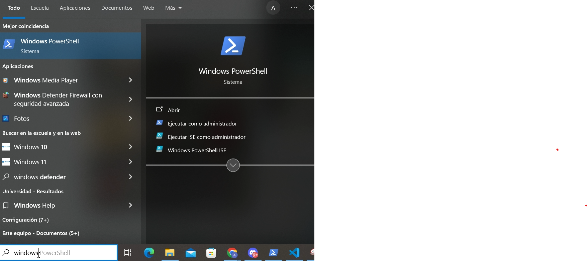
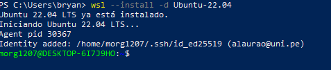
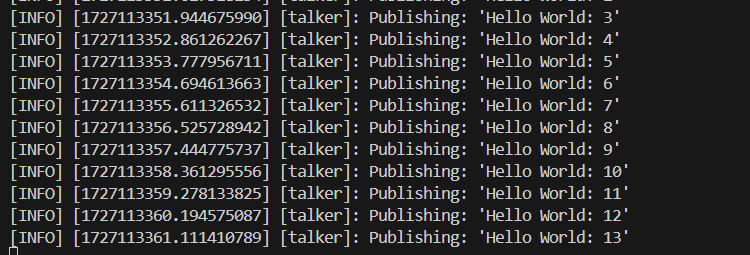
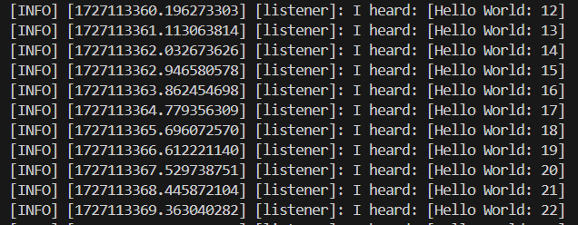

Instalacion de ROS
Nota: Todo este proceso que se detallará a continuacación esta grabado en este video.
Instalacion de ROS
La versión de ROS que usaremos será Humble y gazebo classic, para esto necesitamos tener instalado la versión 22.04 de Ubuntu que se llama Jammy.

Instalar ubuntu se puede hacer de varias maneras, la más sencilla es atravez de wsl2, las otras son dual boot y a travez de una máquina virtual.
wsl (instalación fácil, recomendado)
dual boot (instalación tediosa, recomendado)
máquina virtual (no recomendado)
Instalar wsl en windows
Para esto se puede seguir la guía oficial de windows link o sino siga estos pasos:
Abrir un terminal de windows PowerShell o Windows Command en modo administrador.
Image
Ejecutar
wsl --install -d Ubuntu-22.04
Output (en el caso de ustedes se procedera con la instalación)
Descargar visual estudio code
wsl --install -d Ubuntu-22.04
Instalar Ubuntu en dual boot
Para instalar rn dual boot se encuentran varios videos de youtube, video
Instalar ROS2 Humble
Para instalar Ros2 Humble solo seguir el siguiente documento o en tal caso ejecutar las siguientes lineas de codigo en el terminal.
Configuración regional o local
locale # check for UTF-8 sudo apt update && sudo apt install locales sudo locale-gen en_US en_US.UTF-8 sudo update-locale LC_ALL=en_US.UTF-8 LANG=en_US.UTF-8 export LANG=en_US.UTF-8 locale # verify settings
Setup resources
sudo apt install software-properties-common sudo add-apt-repository universe sudo apt update && sudo apt install curl -y sudo curl -sSL https://raw.githubusercontent.com/ros/rosdistro/master/ros.key -o /usr/share/keyrings/ros-archive-keyring.gpg echo "deb [arch=$(dpkg --print-architecture) signed-by=/usr/share/keyrings/ros-archive-keyring.gpg] http://packages.ros.org/ros2/ubuntu $(. /etc/os-release && echo $UBUNTU_CODENAME) main" | sudo tee /etc/apt/sources.list.d/ros2.list > /dev/null
Install ros2
sudo apt update sudo apt upgrade sudo apt install ros-humble-desktop
Configuración de entorno
Cada vez que se abre una nueva terminal, es necesario configurarla utilizando el siguiente comando:
source /opt/ros/humble/setup.bash
Si no desea realizar esta acción manualmente cada vez, puede agregar esta línea al archivo .bashrc, el cual se ejecuta automáticamente cada vez que se abre una nueva terminal. Para hacerlo, utilice el siguiente comando:
echo "source /opt/ros/humble/setup.bash" >> ~/.bashrc
Después de modificar el archivo .bashrc, es necesario reiniciar la terminal actual para que los cambios surtan efecto. Esto solo es necesario si continúa trabajando en la misma terminal, ya que el archivo .bashrc se ejecuta automáticamente al abrir una nueva terminal. Para aplicar los cambios en la terminal actual, ejecute:
source ~/.bashrc
Probar un ejemplo básico
Abrir un terminal y ejecutar
Terminal 1
source /opt/ros/humble/setup.bash ros2 run demo_nodes_cpp talker
Terminal 2
source /opt/ros/humble/setup.bash ros2 run demo_nodes_py listener
Ejecutar source * /opt/ros/humble/setup.bash * solo es necesario si no se agrego la línea source * /opt/ros/humble/setup.bash * al archivo * .bashrc. *
Output
Output terminal 1
Output terminal 2
